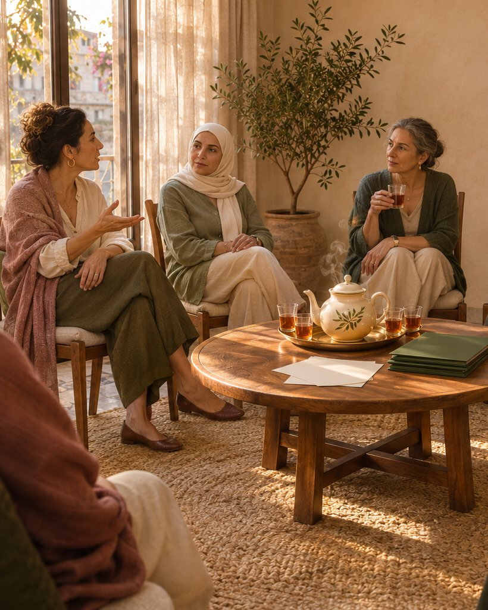
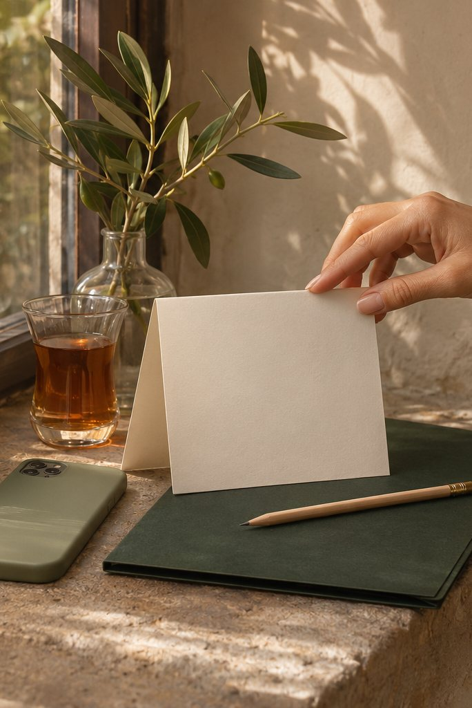

Step 1المرحلة 10:00
Arrivalالوصول
Tea, seats in a circle, and the agreements said aloud: you choose what to share, and you may pass on anything.شاي، ومقاعد في دائرة، والاتفاقات تُقال بصوت عالٍ: أنتِ تختارين ما تشاركينه، ويحقّ لكِ تجاوز أي تمرين.

Women in Power Circleدائرة قوّة للنساءSaturday 5 Decemberالسبت 5 كانون الأولBeirut
A three-hour women’s wellbeing circle, with a printed kit to take home.دائرة رفاه للنساء لثلاث ساعات، مع حقيبة أدوات مطبوعة تأخذينها معكِ.
Saturday 5 Decemberالسبت 5 كانون الأول
15 seats · 3 hours with a break · printed EN/AR kit · 7-day WhatsApp follow-up15 مقعداً · 3 ساعات مع استراحة · حقيبة أدوات مطبوعة بالعربية والإنكليزية · متابعة عبر واتساب لسبعة أيام
Pay by Whish, OMT or cash before the day · seats held 48 hoursالدفع عبر Whish أو OMT أو نقداً قبل يوم اللقاء · يُحجز المقعد لمدة 48 ساعة
Reserve a seatاحجزي مقعدكِThree ways inثلاث طرق للبدء
Every format uses the same Dorina-led CIRCLE Method. The founding circle is open now; the other doors open in turn.كل الصيغ تعتمد منهج CIRCLE نفسه بقيادة دورينا. الدائرة التأسيسية مفتوحة الآن، والأبواب الأخرى تُفتح تباعاً.

A guided group experience using the CIRCLE Method and a practical take-home plan.تجربة جماعية موجّهة تستخدم منهج CIRCLE وتنتهي بخطة عملية تحملينها معكِ.

A Dorina-led session for communities, teams, schools, or women’s groups.لقاء تقوده دورينا للمجتمعات، الفرق، المدارس، أو المجموعات النسائية.

A focused conversation to map one recurring pressure point and choose a small routine.حوار مركّز لفهم نقطة ضغط تتكرر واختيار روتين صغير قابل للتطبيق.
Inside the founding circleداخل الدائرة التأسيسية
A small room, a clear structure, and things you can use on an ordinary Tuesday.مساحة صغيرة، وبنية واضحة، وأدوات تستخدمينها في يوم عادي.
Step 1المرحلة 10:00
Tea, seats in a circle, and the agreements said aloud: you choose what to share, and you may pass on anything.شاي، ومقاعد في دائرة، والاتفاقات تُقال بصوت عالٍ: أنتِ تختارين ما تشاركينه، ويحقّ لكِ تجاوز أي تمرين.

Step 2المرحلة 20:15
Six practical moves with a break, from the first body signal to one clear, chosen next step.ست خطوات عملية مع استراحة، من أول إشارة في الجسد إلى خطوة تالية واحدة واضحة تختارينها.
Step 3المرحلة 32:30
Printed in Arabic and English: Trigger Map, Support Map, Bad-Day Card and the Seven-day Integration.مطبوعة بالعربية والإنكليزية: خريطة المحفّز، خريطة الدعم، بطاقة اليوم الصعب، وممارسة الأيام السبعة.

Step 4المرحلة 4+7
One short WhatsApp prompt a day for a week, so one useful tool becomes part of your days.رسالة قصيرة عبر واتساب كل يوم لمدة أسبوع، لتصبح أداة مفيدة واحدة جزءاً من أيامكِ.
See the full run of the morningاطّلعي على مسار اللقاء كاملاً
Who leads itمَن تقود الدائرة
Dorina’s public work is built around practical wellbeing education: noticing body signals, naming emotions, reading triggers, setting boundaries, and choosing one useful next step.يرتكز عمل دورينا العام على التوعية العملية بالرفاه: ملاحظة إشارات الجسد، تسمية المشاعر، قراءة المحفّزات، توضيح الحدود، واختيار خطوة مفيدة واحدة.
Dorina’s signature framework: six moves from the first body signal to one chosen next step, the same in every circle.إطار دورينا الخاص: ست خطوات من أول إشارة في الجسد إلى خطوة تالية مختارة، وهي نفسها في كل دائرة.
NFNLP NLP Master Practitioner and Neuro Linguistic Coach (June 2023). The training behind the NLP-informed coaching tools she teaches.ممارسة متقدّمة في البرمجة اللغوية العصبية ومدرّبة لغوية عصبية من NFNLP (حزيران 2023). وهو التدريب الذي تستند إليه أدوات الكوتشنغ التي تعلّمها.
Three hours with a break, a printed Arabic and English kit, and a seven-day WhatsApp follow-up.ثلاث ساعات مع استراحة، وحقيبة أدوات مطبوعة بالعربية والإنكليزية، ومتابعة عبر واتساب لسبعة أيام.
She works in Arabic, English and French — because the woman who most needs the session is not always the one most comfortable in English.تعمل بالعربية والإنكليزية والفرنسية — لأن المرأة التي تحتاج الجلسة أكثر من غيرها ليست دائماً الأكثر ارتياحاً للإنكليزية.
Atmosphereالأجواء
Warm light, tea, chairs in a circle and a printed kit on the table. Small enough that every woman is heard.ضوء دافئ، وشاي، ومقاعد في دائرة، وحقيبة أدوات مطبوعة على الطاولة. مساحة صغيرة تُسمَع فيها كل امرأة.
The pictures on this site are illustrations, not photographs of real people or of a past circle.الصور في هذا الموقع رسوم توضيحية، وليست صوراً لأشخاص حقيقيين أو لدائرة سابقة.
The line she keepsالحدّ الذي تلتزم به
An educator and coach — not a therapist.مدرِّبة ومثقِّفة — لا معالِجة نفسية.
Dorina says this plainly in every session: her work is educational and non-clinical. She does not diagnose or treat any condition. When something deserves qualified professional care, she says so warmly and helps the person find it. That clarity is not a limitation — it is why the room feels safe.تقولها دورينا بوضوح في كل جلسة: عملها تثقيفي وغير عيادي. لا تشخّص ولا تعالج أي حالة. وحين يستحق أمرٌ ما رعاية مهنية مختصة، تقولها بدفء وتساعد على الوصول إليها. هذا الوضوح ليس قيداً — بل هو ما يجعل المساحة آمنة.
Founding editionالإصدار التأسيسي
The first room of the Women in Power Circle. Your seat is confirmed once payment is received, and held for 48 hours while you arrange it.الغرفة الأولى لدائرة قوّة للنساء. يُثبَّت مقعدكِ عند استلام الدفع، ويبقى محجوزاً لمدة 48 ساعة ريثما ترتّبين ذلك.
Not this date? Join the list for the next circleالموعد لا يناسبكِ؟ انضمّي إلى قائمة الدائرة القادمة

Saturday 5 Decemberالسبت 5 كانون الأول
15 seats · 3 hours with a break · printed EN/AR kit · 7-day WhatsApp follow-up15 مقعداً · 3 ساعات مع استراحة · حقيبة أدوات مطبوعة بالعربية والإنكليزية · متابعة عبر واتساب لسبعة أيام
Pay by Whish, OMT or cash before the day · seats held 48 hoursالدفع عبر Whish أو OMT أو نقداً قبل يوم اللقاء · يُحجز المقعد لمدة 48 ساعة
Reserve a seatاحجزي مقعدكِ